Flagships
Live pages, not screen recordings
Five demos — better opened than described
Heavy graphics inside a browser tab: raw WebGL shaders, cursor physics, parametric geometry. Each demo is a page of its own — nothing to install.
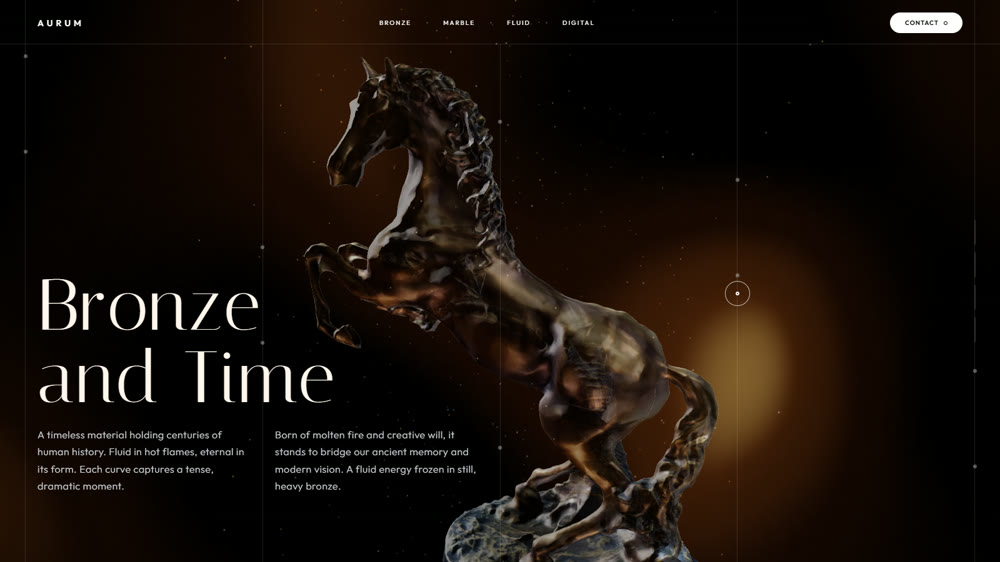
AURUM
A bronze sculpture on raw shaders: the camera orbits it a full 360° as you scroll.
Open demo→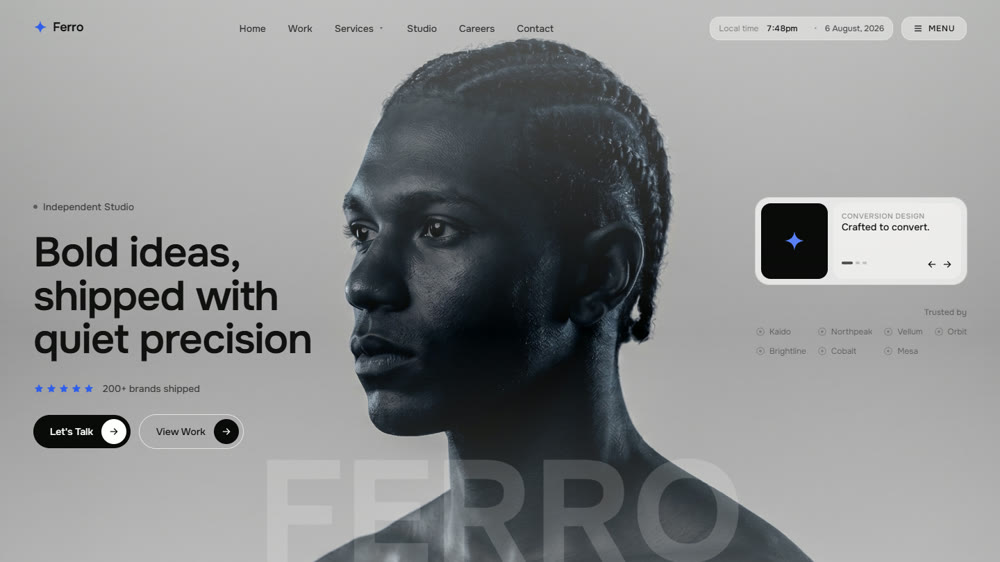
Ferro
A studio landing page where a liquid cursor tears open a second image right under the pointer.
Open demo→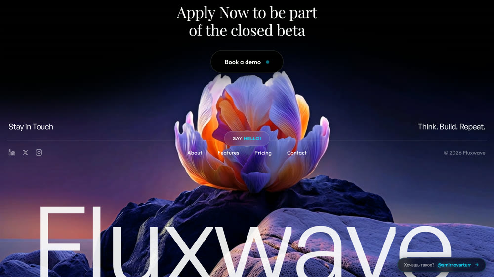
Fluxwave
A neon first screen driven by live background video, with cursor physics of its own.
Open demo→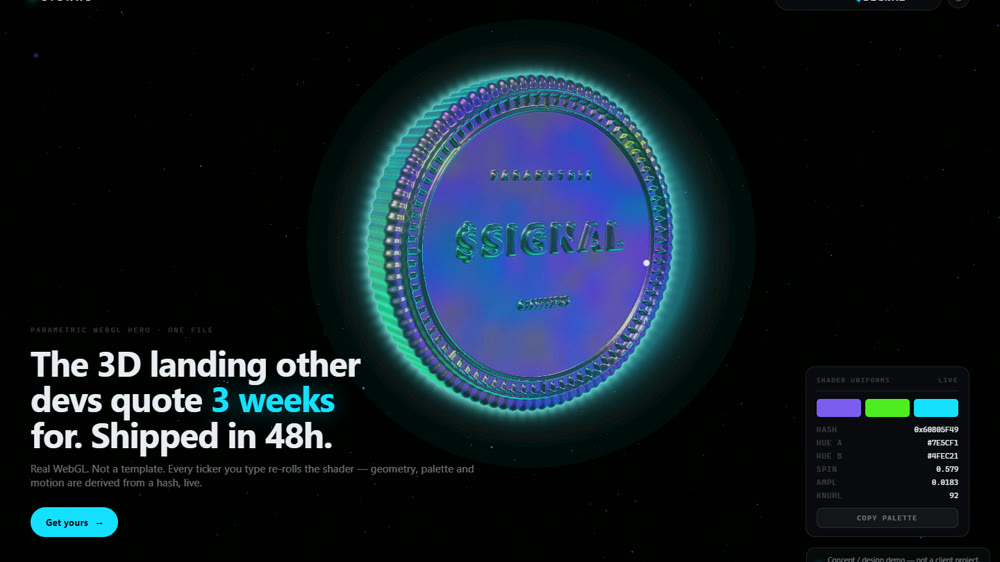
SIGNAL
Type a ticker and the coin's geometry and palette rebuild around it on the fly.
Open demo→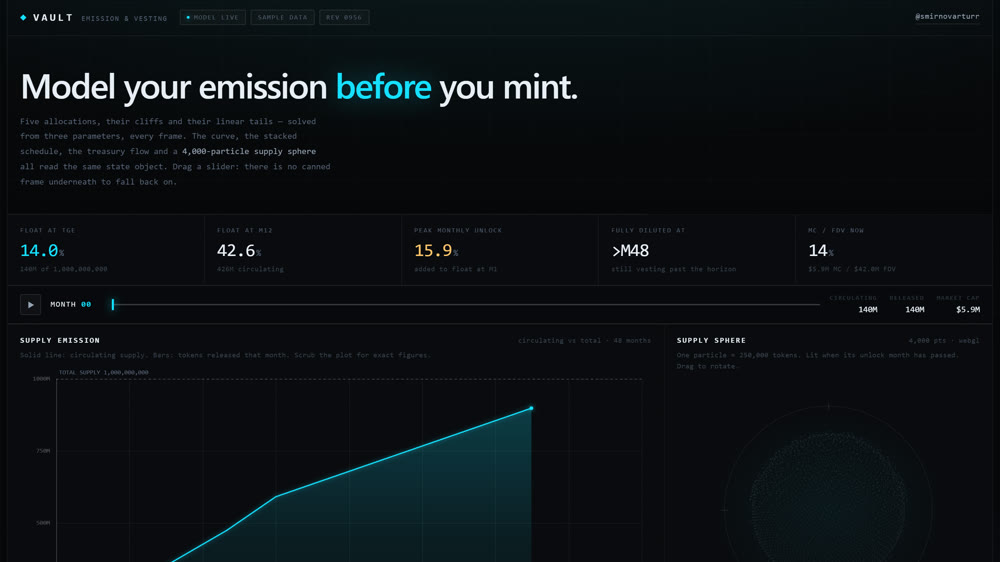
VAULT
Tokenomics in motion: drag a month and the emission curve, the vesting and a 4,000-particle supply sphere all recompute at once.
Open demo→All work
Sheets 01—14
Fourteen projects that shipped
Production work for manufacturers and suppliers — the screens are shown in the language their users actually work in.
Sheet 01
3D configurator
STANDES — shelving laid out in 3D, priced as it goes
The client enters the room dimensions and places shelving, shelves and display cases in 3D. The quote follows every change, the scene opens in AR or renders to an image, and the finished layout goes to the manufacturer as a brief — without a call to a sales rep.
- Scene
- layout inside a room of given dimensions, 3D and 2D views
- Catalogue
- shelving, shelves, display cases, accessories, pegboard
- Quote
- recalculated in real time from the current bill of items
- Export
- AR view, render, screenshot, item summary, send as brief
- Stack
- Three.js
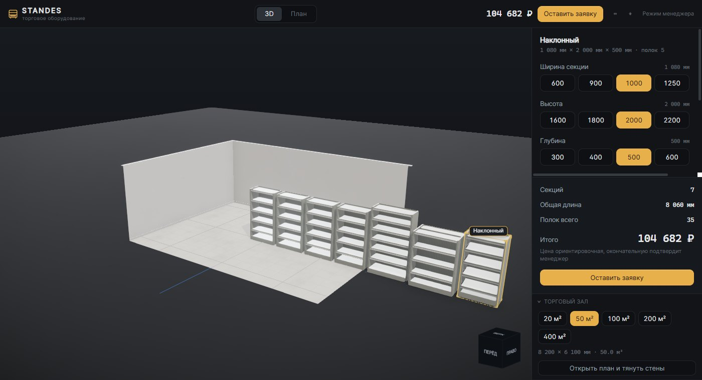
Sheet 02
Parametric configurator
Ventprom — duct fittings built to size in the browser
The buyer enters the dimensions and watches the fitting redraw with its dimension lines in place. Out comes a costed spec and a quote — no thread of emails with a sales manager.
- Products
- ducts, bends, reducers, tees, saddles, cowls
- Input
- dimensions, material, connection type
- Preview
- rebuilds live, dimension lines included
- Output
- costed specification and quote
Sheet 03
Three.js
Dios+ — a fleet moving on a globe
Cargo ship and aircraft routes drawn along great circles, from Azov out to twenty-eight cities. Built on Three.js and running in the browser with nothing to install.
- Base
- NASA Earth textures, cloud layer, atmospheric halo
- Routes
- 28 cities, a live fleet of ships and aircraft
- Stack
- Three.js
Sheet 04
Design · art direction
SREZ — a coatings catalogue that behaves like the wall
A catalogue built as a working tool rather than a shop window. Eight textures, each with a technical card — and in place of flat photography, a lamp: drag the light across the wall at a raking angle and the relief comes up, exactly the way an applicator checks a surface.
- Concept
- catalogue as a working tool, not a shop window
- Textures
- 8 coatings, each with layer thickness, coverage, trowel passes, price
- Device
- raking light reveals the relief as the slider moves
- Type
- Unbounded display grotesque, monospaced technical labels
- Stack
- plain HTML/CSS/JS, no libraries
Sheet 05
B2B wholesale
Santehmark — wholesale plumbing catalogue
A B2B store for a supplier running four warehouses: brands, live stock, price lists and a separate dealer login. The first screen is a 3D scene so the catalogue does not read like a price list.
- Sections
- catalogue, brands, stock, price lists, dealer portal
- First screen
- 3D scene — chrome, droplets, vapour
- Logistics
- 4 warehouses, dispatch on the day of order
Sheet 06
Design · concept
Santehmark — concept: shop window and dealer desk in one site
A design proposal laid out as a project document. The central decision: one interface in two states — a visitor from search gets the shop window, a signed-in dealer gets a working desk with prices, credit limit and orders. One switch changes everything at once.
- Idea
- split the shop window from the working desk — dealers bring 80% of revenue and need speed
- States
- guest: catalogue and prices; dealer: orders, balance due, credit limit, documents in one archive
- Language
- installation-drawing graphics — honest about what ends up hidden in the wall
- Format
- interactive sketch document with a state switch
Sheet 07
Selection engine
Ventmarket — fans selected by operating point
The engineer enters airflow and total pressure; the system picks the fan, draws the aerodynamic curve through the operating point and assembles the order with every ancillary it needs.
- Catalogue
- 400+ units of equipment
- Maths
- ~20,000 polynomial curves
- Sections
- aerodynamics, acoustics, VFD, cost of ownership
- Order
- cart, weight and volume, shipping, quote request
- Integration
- Bitrix24
- Languages
- Russian, English
Sheet 08
Legacy → web
Vertro — a desktop engineering suite moved into the browser
It was a Visual Basic application on Access databases, usable on exactly one machine. I opened the databases, pulled out the data and the calculation logic and rebuilt the thing for the web: nine calculation modules and the full equipment catalogue now open from a link.
- Source
- VB6 application, Access (.mdb) databases, OCX controls
- Migration
- databases opened, data extracted from the .exe, moved to SQL
- Carried over
- 63 tables, 3,471 records — fans, motors, sections
- Modules
- AHU configurator, fan and drive selection, acoustics, heat exchangers, performance curves
- Stack
- Next.js, React
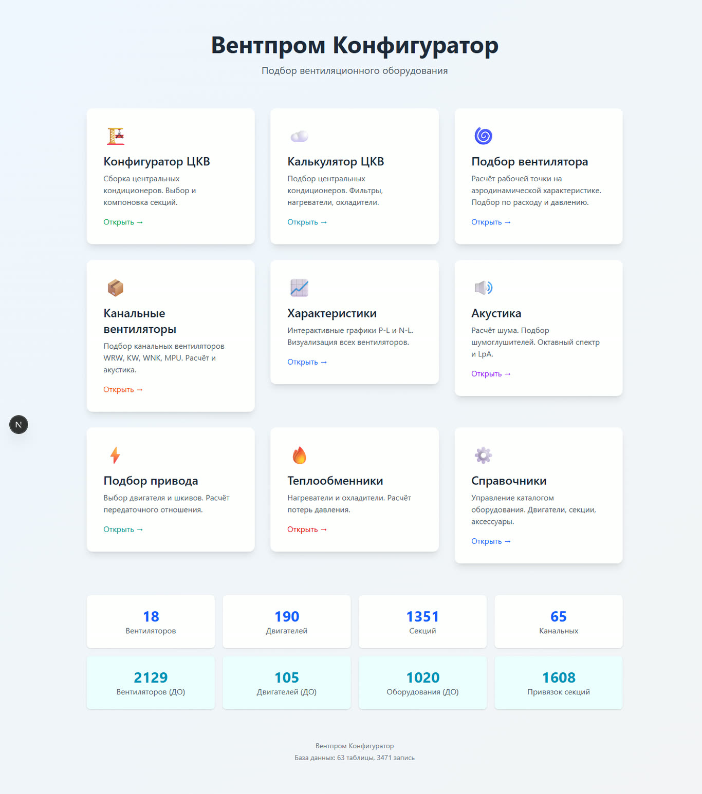
Sheet 09
Automation · ERP
Softvent — from a PDF project to a spec the ERP can import
Ventilation design documents arrive as multi-page PDFs with tables laid out to the national standard. The system reads them and returns a clean bill of materials — ducting in metres, fittings in pieces — ready to load into 1C:ERP instead of being retyped by hand.
- Input
- PDF project to GOST 21.602-2016, dozens of pages
- Parsing
- locates the specification tables, recognises line items
- Conversion
- units mapped to the product range (metres → pieces by stock length)
- Output
- 33 line items from the test project, ready to import
- Next
- UI autofill of the product range inside 1C:ERP
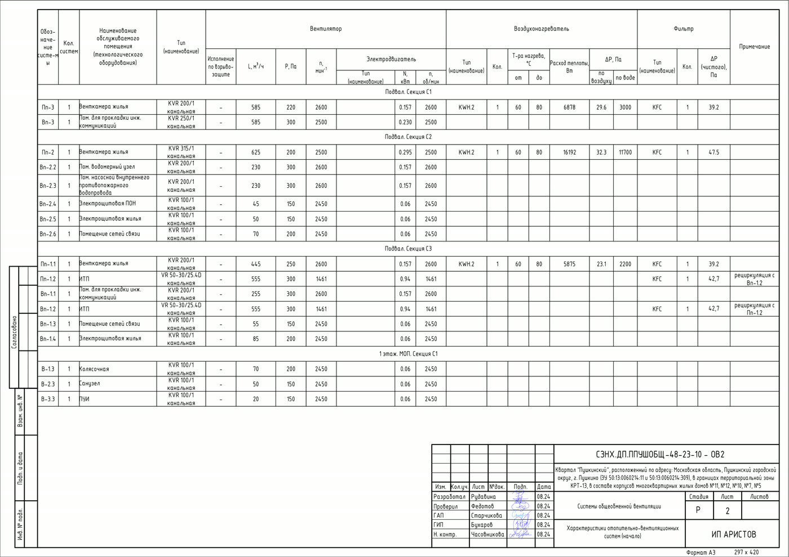

Sheet 10
Computer vision
Strimkarts — cards recognised live on stream
An overlay on top of a live stream: the camera watches the table, the system identifies the card the moment it is turned over, pulls its market price and keeps score across the whole session.
- Input
- live camera feed
- Recognition
- the card is identified in real time
- On screen
- pack and card counters, running total, top hits with prices
- Format
- browser overlay, drops straight into OBS
Sheet 11
Learning
Epidemio — a spaced-repetition trainer for a medical exam
A textbook and a question bank are broken down into cards, and from there the app decides what to show and when. It also tracks whether stated confidence matches real accuracy — in other words, where the student is overrating themselves.
- Bank
- 3,401 cards and 163 exam questions
- Source
- PDFs parsed into questions, deduplicated, wordings reconciled
- Repetition
- spaced algorithm: mature, young, learning, new
- Modes
- flashcards, and an exam with a spoken long-form answer
- Analytics
- confidence calibration, weekly load, 30-day activity
- Scope
- 9 topic blocks of the subject area
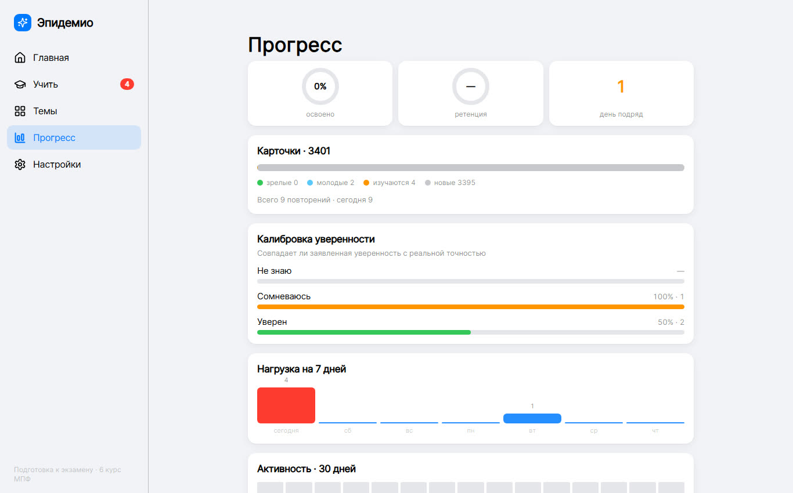
Sheet 12
Learning · Go
Vector — Go interview prep with a code runner and an AI judge
Lesson → exercise with real code execution → reinforcement. Exam answers are not graded by self-assessment but against rubrics, with a reference breakdown to compare against. The track runs all the way to an offer — eight stages.
- Practice
- built-in editor, code run in a sandbox, output checked
- Exam
- answers scored against rubrics, reference breakdown: core / deeper / trap
- Memory
- spaced repetition (FSRS); cards written from the judge's verdict
- Track
- a single path, 8 stages, progress by node
- Stack
- Go backend, React, execution sandbox, external AI judge
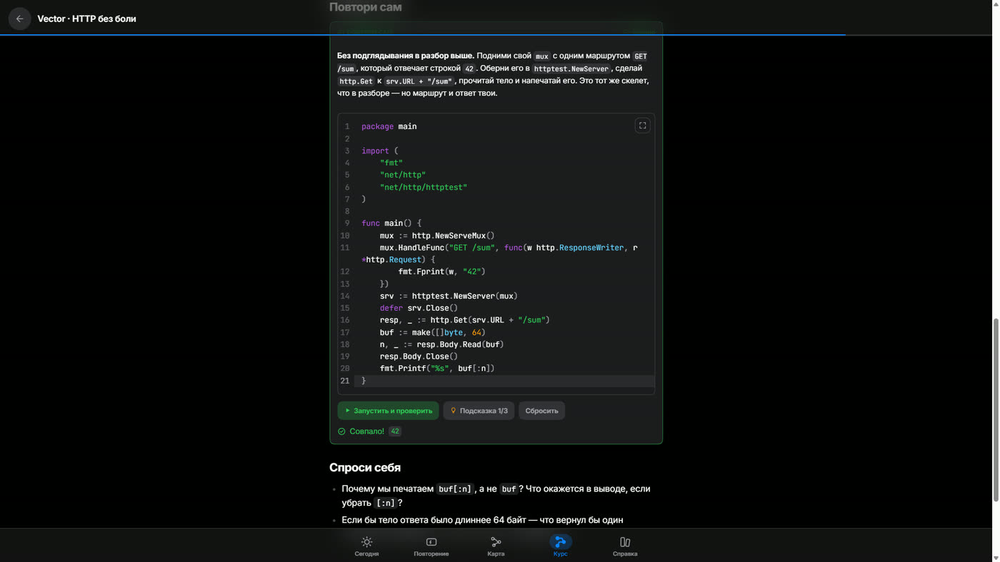
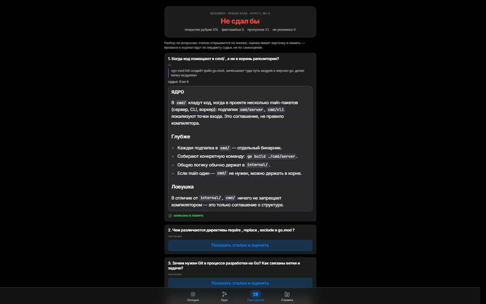
Sheet 13
Backend · Java
AI Health Coach — the backend behind a mobile app
A Spring Boot backend for a fitness app: accounts and subscriptions, nutrition with adaptive targets, training with an AI-generated programme, wearable sync and a coach conversation on the Claude API. Production-ready and packaged for deploy.
- Stack
- Java 21, Spring Boot 3.4, PostgreSQL, Flyway, JWT
- Size
- 53 REST endpoints, 51 tables, 9 domains
- Integrations
- Claude API, Firebase FCM, Garmin OAuth, HealthKit, Health Connect
- Subscriptions
- plans, trial, store receipt validation
- Deploy
- Docker, ready-made Railway and Render configs
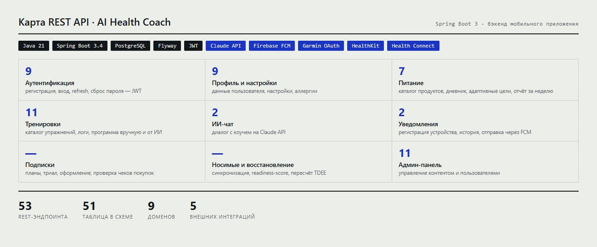
Sheet 14
Speech synthesis
Voice clone — the model speaks a language its owner doesn't
The model was trained on recordings of one person. Judge for yourself: on top, a real recording; below, English speech they never said. Same voice.
- Training
- on the voice owner's own recordings
- Input
- arbitrary text
- Output
- speech in a language absent from the training data
- Use
- voiceover, live stream interaction, role-gated access
The second clip is generated by the model. A capability demo, made for the owner of the voice and with their knowledge.